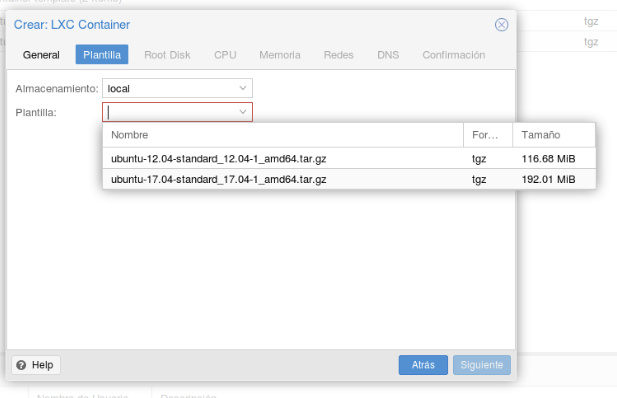

Inicio
Proxmox Virtual Environment es una solución completa de virtualización, que funciona sobre Debian GNU/Linux, permitiendo la creación y gestion de máquinas virtuales como OpenVZ o KVM.
Sus principales caracteristicas son:
1. Software Libre: Acceso completo al código, creación de ramas paralelas, etc.
2.Funciona sobre Debian GNU/Linux: Al ser Debian tan estable, se limitan los problemas debidos al SO.
3.Soporte OpenVZ: Permite crear contenedores de paravirtualización, de alto rendimiento, pero más dependientes del SO anfitrión.
4.Soporte KVM: Permite crear máquinas virtuales KVM, completamente independientes del SO anfitrión, que pueden tener su propio kernel, cortafuegos, etc.
5.Software vivo: Las actualizaciones de Proxmox son constantes, tanto para la solución de errores, como añadir nuevas caracteristicas.
6.Interfaz web de gestión: Simplifica y facilita el trabajo, evitando usar la consola de comandos.
7.API remota: Permite acceso remoto usando cualquier lenguaje de programació a todas las funciones.
8.Migración en vivo: Permite mover una máquina virtual entre servidores físicos sin caídas de servicio.
9.Cluster: Permite crear clusters de servidores para entornos profesionales.
10.Alta Disponibilidad: Ofrece características de alta disponibilidad , permitiendo migrar máquinas de nodo con un par de clicks de ratón.
Instalación
Lo primero de todo utilizaremos la opción mas sencilla que es, utilizar un USB booteable.
Para ello nos descargaremos la ISO de Proxmox, aqui.
Cuando hayais descargado la ISO y lo habeis añadido al USB solo faltaria introducir el USB en el micro servidor.
En el proceso de la instalación nos pedira una contraseña y nos pedira introducirla de nuevo para confirmarla para acceder al servidor y un mail.

Configuración
Por ultimo tendremos que añadir la configuración para el servidor que sera lo siguiente.
IP->Numero de identificación una red de un dispositivo.
Mascara->Es una combinación de bits que indican que parte corresponde a subred y que parte al hots.
Puerta de Enlace->Es un sistema de la red que permite acceder a otra red.
DNS->Es un sistema de dominios para alojar una web u otrs servicios asociados.
Al poner todos estos datos le daremos a NEXT y el PROXMOX terminara de instalarse.

Después de la instalación se reiniciará el servidor y podremos entrar en lo que es la ventana de comandos de proxmo que no utilizaremos.
Ahora vamos a un equipo y pondremos la IP fisica que le hemos dado a nuestro servidor: 'https://"IP":8006' al introducir en la URL nos sandra la siguiente ventana:


Virtualización
Ya con el servidor de Proxmox instalado, toca decidir entre 'Maquinas Virtuales' o 'Contenedores'.
Maquinas Virtuales
Hay varias razones de utilizar MV, una de ellas es que quieras instalar un sistema operativos de windows, otra trata de querer flexibilidad y ejecutar multiples aplicaciones, y por ultimo es que te preocupa la seguridad y una MV te proporciona muchisima seguridad comparada con un contendor.
Plantilla
Para utilizar los contenedores tendre que instalar dentro de ellos las plantillas corespondientes al SO que deseeamos.
Para descargar la plantilla nos iremos a local --> Content --> Templates, y seleccionaremos la plantilla que deseamos.
Una vez descargada la plantilla que deseamos, procederemos a la instalacion del contenedor en el que tendremos que asignarle datos como:
Contraseña de acceso, IP, Mascara, DNS.


Una vez instalada la plantilla como Contenedor en proxmox lo iniciamos y nos aparece un resumen y un apartado de consola para controlar instalaciones y configuraciones del server linux.